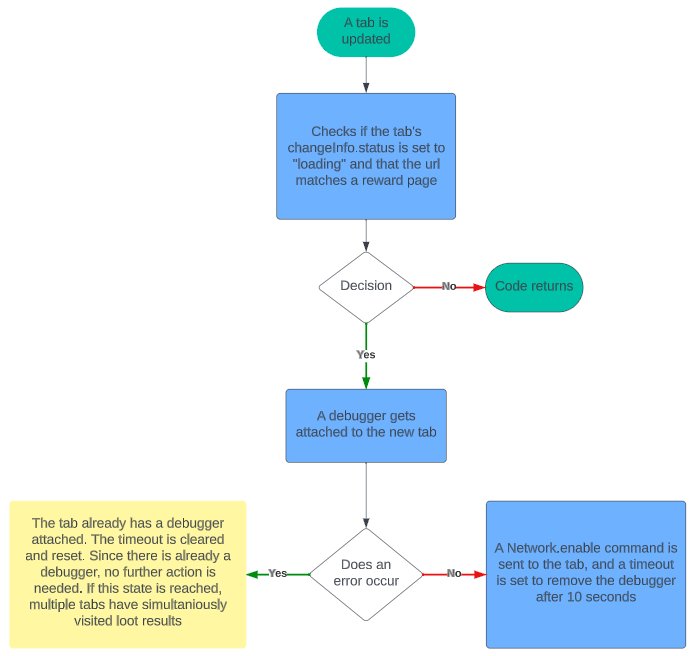
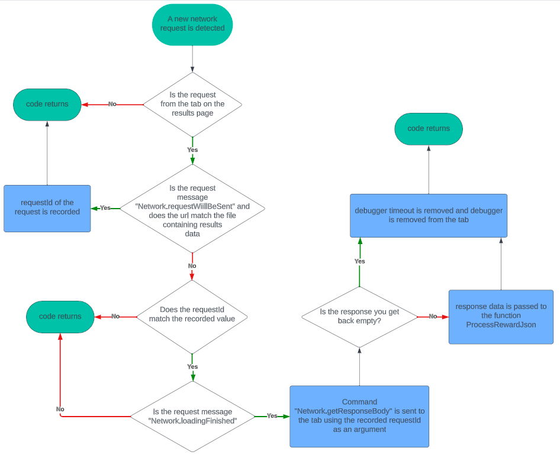
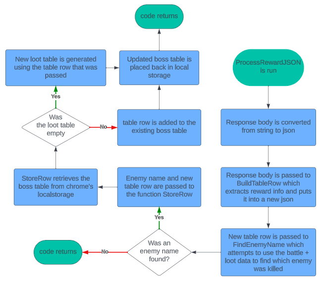

This extension was started as a fun project for me to learn how extensions work, and hopefully get a working loot tracker at the end of it. When I started, I didn't know how javascript worked so the road to today was paved with many mistakes. If you were hoping to create your own extension to silently collect data from Granblue Fantasy, this should be a nice resource to use. On this page, I will explain how the service_worker.js collects data from the game.
This is handled by the chrome.tabs.onUpdated event listener as well as the onAttach function.
Now that the tab has a debugger attached and received the Network.enable command, all network requests involving that tab will trigger an event picked up by the networkListener function. The whole process of grabbing the data is handled by the networkListener function.
Once the networkListener function passed the data to ProcessRewardJSON, it is processed and stored for easy use by other parts of the extension. The function extracts the useful data, uses that data to find which enemy was killed, and stores that data in that enemy's table
